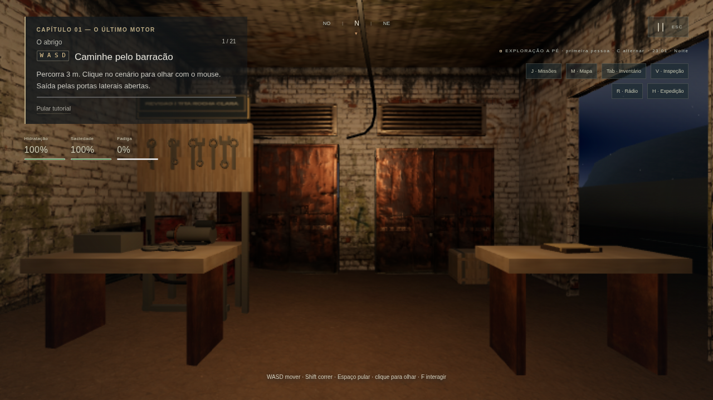
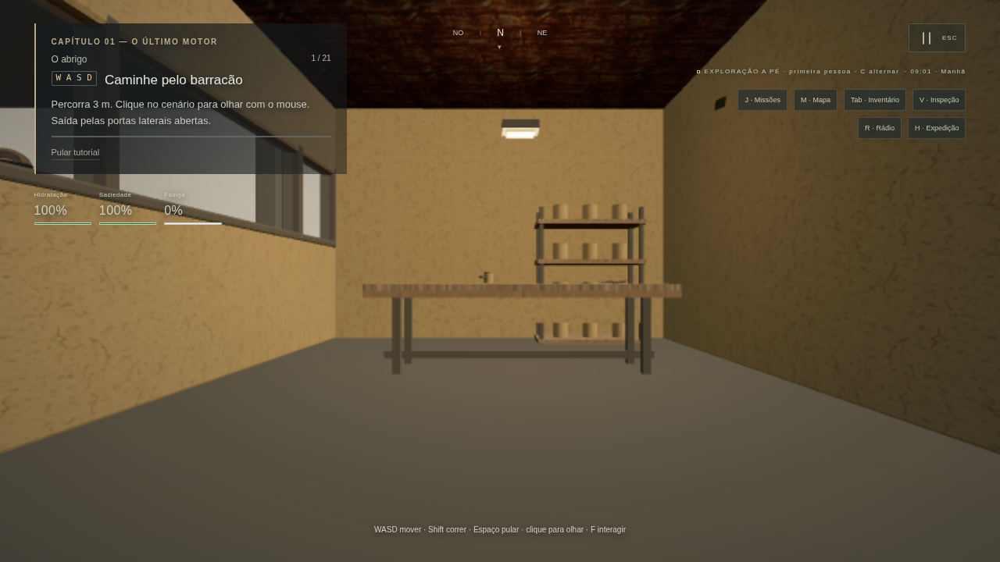
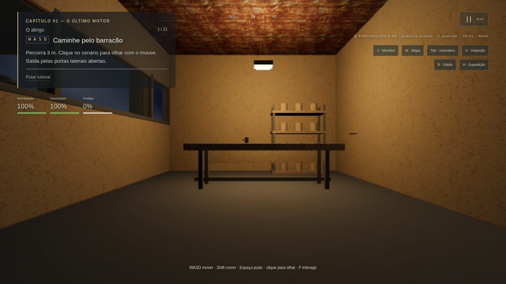
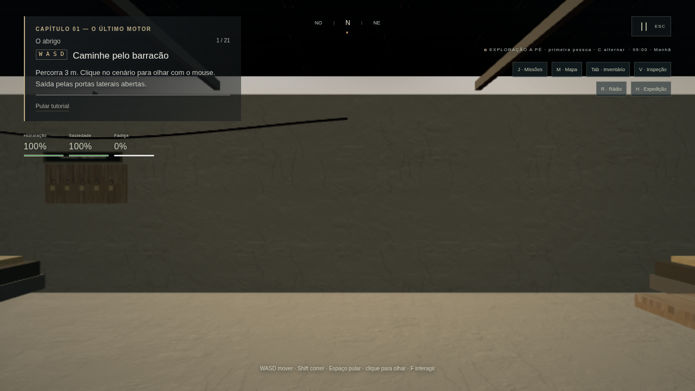
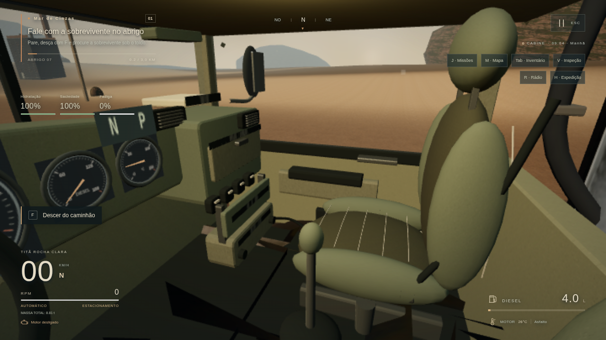
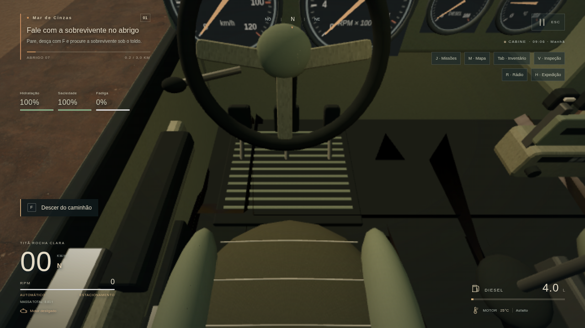
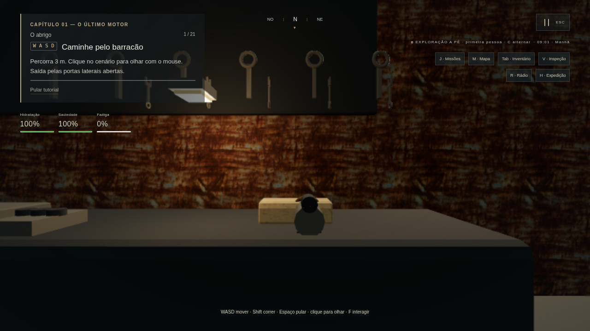

2047: Rede Aurora — comparação 0.8.1 / 0.8.2
Capturas reais do jogo, sem edição dos PNGs. Mesmo roteiro de diagnóstico, posições, horários e perfil Baixo a 75%, em 1280 × 720. Os deslocamentos e horários são de diagnóstico; não houve sessão humana de 30 minutos.
O olho da cabine foi reposicionado para dentro do modelo, portanto seu enquadramento muda. Materialização do terreno e correção da malha que cobria Ivani são diferenças da implementação, não tratamento das imagens.
Chromium/SwiftShader: os números descrevem esta renderização por software. Não comprovam FPS em GPU física. Métricas e limites da comparação.
Barracão / bancada
Draw calls: 104 → 136 · Triângulos: 107576 → 155794 · Setores: 9 → 9
Barracão / moradia
Draw calls: 30 → 31 · Triângulos: 28350 → 52298 · Setores: 9 → 9
Barracão / noite
Ângulo adicional, sem par anterior. Não representa comparação equivalente.
Depois · 0.8.2
Draw calls: — → 136 · Triângulos: — → 155794 · Setores: — → 9
Estrada inicial
Draw calls: 99 → 125 · Triângulos: 133916 → 186930 · Setores: 9 → 9
Dante / costas
Draw calls: 98 → 130 · Triângulos: 149496 → 200328 · Setores: 9 → 9
Dante / frente
Draw calls: 89 → 117 · Triângulos: 100186 → 146084 · Setores: 9 → 9
Sobrevivente do Abrigo 07
Draw calls: 83 → 112 · Triângulos: 100526 → 144914 · Setores: 9 → 9
Zeca / Boa Viagem
Draw calls: 106 → 140 · Triângulos: 128579 → 177301 · Setores: 9 → 9
Interior acessível da loja
Ângulo adicional, sem par anterior. Não representa comparação equivalente.
Depois · 0.8.2
Draw calls: — → 74 · Triângulos: — → 104254 · Setores: — → 9
Loja / noite
Ângulo adicional, sem par anterior. Não representa comparação equivalente.
Depois · 0.8.2
Draw calls: — → 74 · Triângulos: — → 104254 · Setores: — → 9
Oficina do Cotovelo
Draw calls: 51 → 64 · Triângulos: 84326 → 127108 · Setores: 9 → 9
Dona Marta
Draw calls: 64 → 81 · Triângulos: 86902 → 125968 · Setores: 9 → 9
Motel Última Luz
Draw calls: 87 → 107 · Triângulos: 95344 → 143320 · Setores: 9 → 9
Motel / interior
Ângulo adicional, sem par anterior. Não representa comparação equivalente.
Depois · 0.8.2
Draw calls: — → 100 · Triângulos: — → 140014 · Setores: — → 9
Pátio dos Retornantes
Draw calls: 81 → 100 · Triângulos: 117790 → 149038 · Setores: 9 → 9
Balança Rodoviária 07
Draw calls: 76 → 94 · Triângulos: 86792 → 122314 · Setores: 9 → 9
Tomás
Draw calls: 74 → 102 · Triângulos: 92752 → 119152 · Setores: 9 → 9
Mãe Ivani
Draw calls: 45 → 59 · Triângulos: 76954 → 91994 · Setores: 9 → 9
Titã / exterior
Draw calls: 51 → 85 · Triângulos: 105274 → 187190 · Setores: 9 → 9
Titã / cabine
Draw calls: 107 → 138 · Triângulos: 121825 → 197723 · Setores: 9 → 9
Cabine / banco e porta
Ângulo adicional, sem par anterior. Não representa comparação equivalente.
Depois · 0.8.2
Draw calls: — → 67 · Triângulos: — → 155731 · Setores: — → 9
Cabine / pedais
Ângulo adicional, sem par anterior. Não representa comparação equivalente.
Depois · 0.8.2
Draw calls: — → 73 · Triângulos: — → 157143 · Setores: — → 9
Entardecer
Draw calls: 51 → 85 · Triângulos: 105274 → 187190 · Setores: 9 → 9
Noite / faróis
Draw calls: 51 → 85 · Triângulos: 105274 → 187190 · Setores: 9 → 9
Cabine / noite
Draw calls: 107 → 138 · Triângulos: 121825 → 197723 · Setores: 9 → 9
Oficina / bancada
Ângulo adicional, sem par anterior. Não representa comparação equivalente.
Depois · 0.8.2
Draw calls: — → 30 · Triângulos: — → 90188 · Setores: — → 9
Conferência adicional de perfis
Capturas separadas no Médio/Alto. Não são pares equivalentes à referência no Baixo e não medem GPU física.